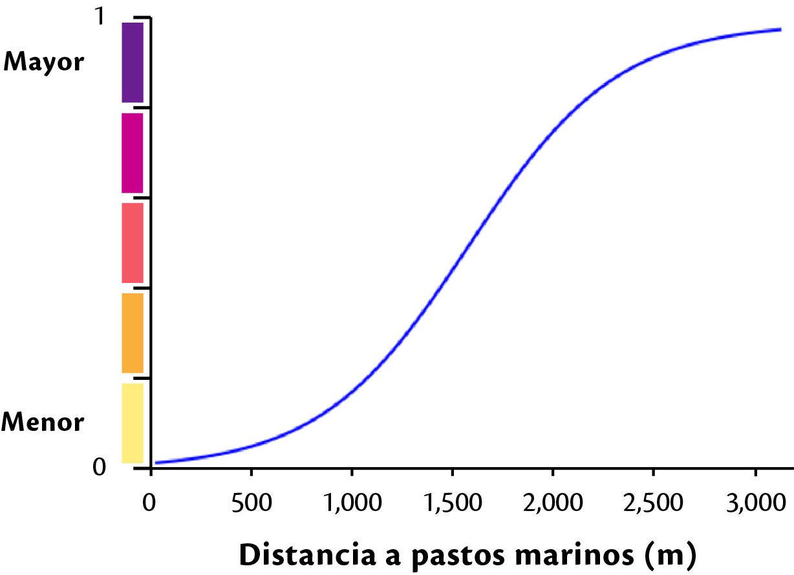
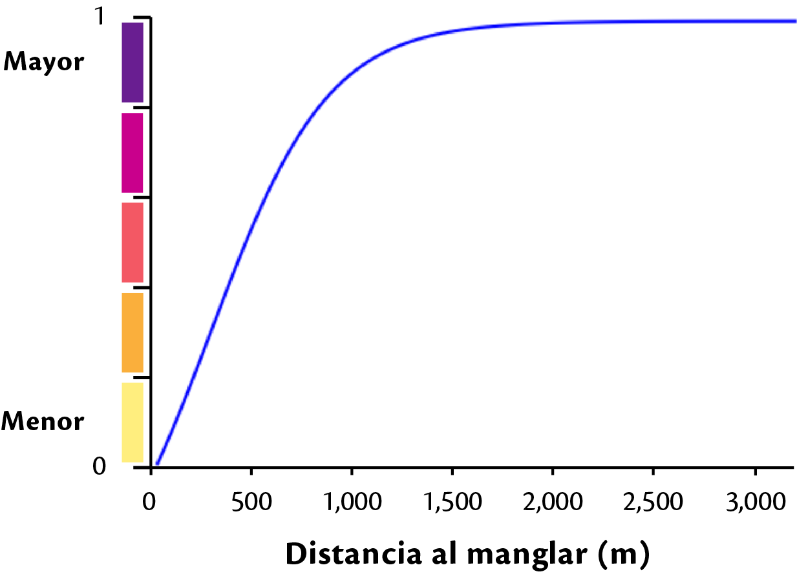
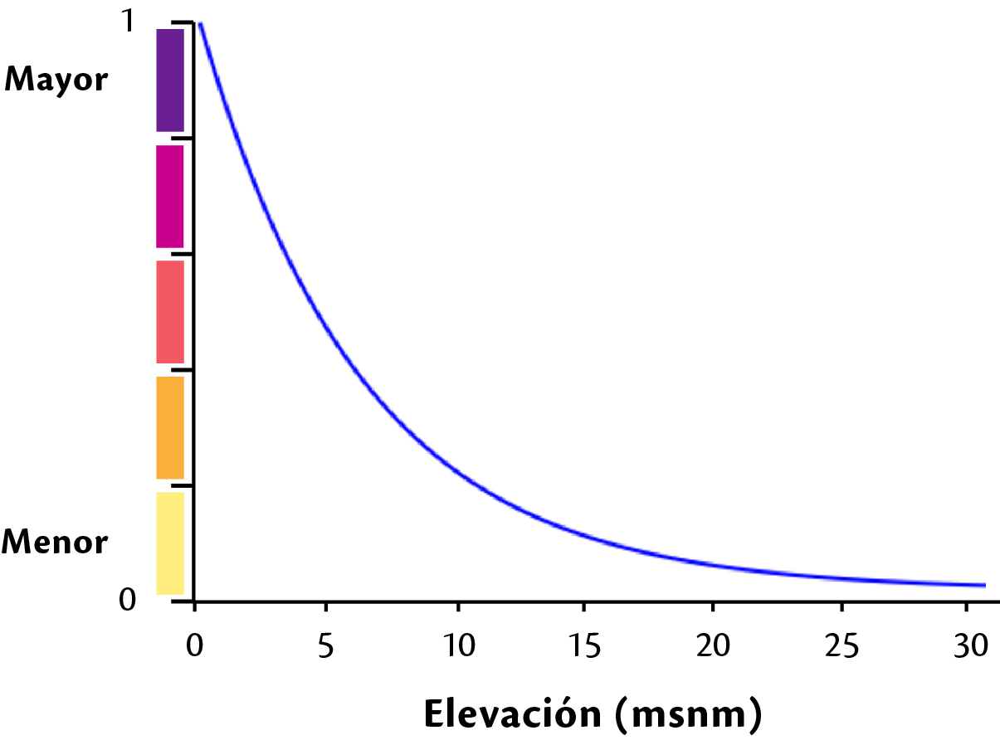

Exposición¶

Insumos¶
Biológica¶
Vegetación acuatíca¶
Exposición - biológica
Peso local:0.16
insumo: ifv_v_acuatica_yuc.tif
Definición: Distancia entre los pastos y la línea de costa
mínimo: 0.0 máximo:3000tipo de función: Continua - Logística
Nota
Esta capa fue procesada en grass 7 ya que no se pudo procesar en la plataforma
archivo json: fv_exp_bio_v_acuatica.json

centro:1500, min:0, max:3000, saturacion: 3, k:0.0834999999999999Resultado: SIG/desarrollo/sig_papiit/entregables/exposicion/biologica/v_acuatica_yuc/fv_v_acuatica_yuc.tif
Nombre de la capa: fv_v_acuatica_yuc.tif
issue: Vegetación acuática
Vegetación costera¶
Exposición - Biológica
Criterio : Vegetación costera
Definición: Tipo de vegetación que se encuentra en la franja de 3 kilometros (manglar, dunas)
peso local: 0.84
Esta capa representa la integración de las capas de distancia de dunas costeras con la capa de distancias de manglar la construcción es
fv_v_costera_yuc = fv_distancia_dunas.tif*0.25 + fv_ditancia_manglar.tif*0.75
Insumos
Dunas costeras
Exposición - biológica - Vegetación costera
peso: 0.25
insumo: ifv_distancia_dunas_yuc.tif
Definición: Distancia mínima a una celda de dunas
mínimo: 0.0 máximo:3000Tipo de función: Continua - logística
archivo json: fv_exp_bio_veg_dunas.json
centro:100 min:0 max:3000 saturación:10 k:0.255Resultado: SIG/desarrollo/sig_papiit/entregables/exposicion/biologica/v_costera_yuc/fv_distancia_dunas_yuc.tif
Manglar
Exposición - Biológica - Vegetación costera
peso local: 0.75
insumo: ifv_distancia_manglar_yuc.tif
Definición: Distancia mínima a una celda de manglar, independiente de la orientación. Barrera a inundaciones
Tipo de función: Continua - logística
archivo json: fv_exp_bio_veg_manglar.json

centro:250 min:0 max:3000 saturación:4 k:0.108Resultado: /SIG/desarrollo/sig_papiit/entregables/exposicion/biologica/v_costera_yuc/fv_distancia_manglar_yuc.tif
Resultado: SIG/desarrollo/sig_papiit/entregables/exposicion/biologica/v_costera_yuc/fv_v_costera_distancia_yuc.tif
Nombre de la capa: fv_v_costera_distancia_yuc
issue: Vegetación costera
Resultado¶
Los insumos de exposición biológica se integran en una capa de la siguiente forma:
exp_biologica = fv_costera_distacia_yuc * 0.84 + fv_v_acuatica_yuc * 0.16
Ruta : SIG/desarrollo/sig_papiit/entregables/exposicion/salida/exp_biologica.tif
Física¶
Distancia a la playa¶
Exposición - Física
peso local: 0.13
insumo: ifv_distancia_playa_yuc.tif
Definición: Distancia a la playa
mínimo: 0.00 máximo:3000.00Tipo de función: Continua - logística
archivo json: fv_exp_fis_playa.json
centro:60, min:0, max:3000, saturación:7, k:0.1815
Resultado: SIG/desarrollo/sig_papiit/entregables/exposicion/biologica/v_costera_yuc/fv_distancia_playa_yuc.tif
Nombre de la capa: fv_distancia_playa_yuc.tif
issue: Distancia playa
Elevación¶
Exposición - Física
peso local: 0.87
insumo: ifv_elev_yuc_v2.tif
Definición: Localización sobre el nivel medio del mar
Tipo de función: Continua - Concava decreciente
arhivo json: fv_exp_fis_elevacion.json

min: 0 max: 31 gama: 0.049249999999999995 saturacion: 3
Resultado: SIG/desarrollo/sig_papiit/entregables/exposicion/fisica/elev_yuc/fv_elevacion_yuc.tif
Nombre de la capa: fv_elevacion_yuc.tif
issue: Elevación
Resultado:¶
Los insumos de exposición - física se integran en una capa de la siguiente forma:
exp_fisica = fv_distancia_playa * 0.13 + fv_elevacion * 0.87
Ruta: SIG/desarrollo/sig_papiit/entregables/exposicion/salida/exp_fisica.tif
Integración¶
el criterio de Biológica y Física se integran para formar la capa de exposición
exposición = exp_biologica * 0.50 + exp_fisica * 0.50
Ruta: SIG/desarrollo/sig_papiit/entregables/exposicion/salida/exposicion.tif